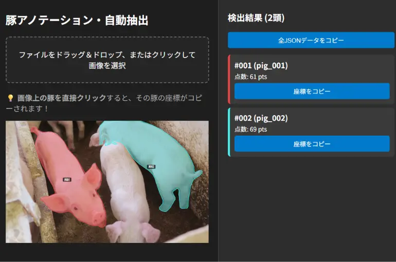
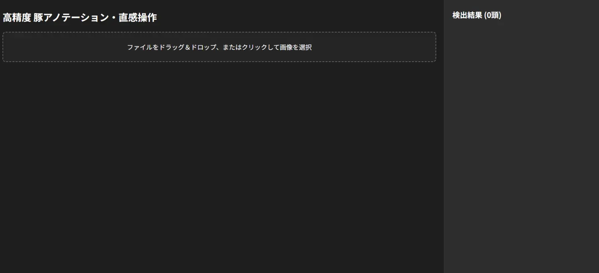
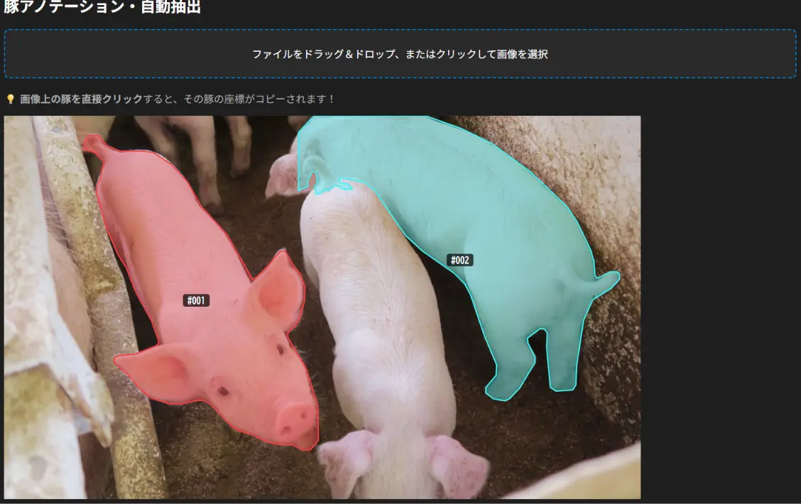
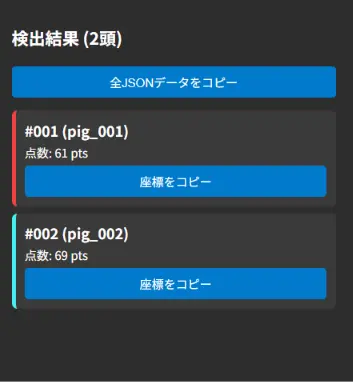

01
課題の気づき：人海戦術による「時間とコストの肥大化」
payments 現場の課題感
アノテーション作業の現場では、ひたすら人の手でアンカーポイントを打ち込んでラベリングを行っているケースが散見されます。
この作業の最大の問題は、現場の作業的な負担だけでなく、膨大な枚数に比例して**時間と人件費（コスト）が跳ね上がり続ける点**にあります。ゼロからアンカーを打ち続ける運用は、コスト面で大きな課題であると感じました。
現場課題の把握から自作ツールでの改善案を形にし、運用の実情を経て見えた「既存仕組みの先にある時間とコストの再投資計画」。

アノテーション作業の現場では、ひたすら人の手でアンカーポイントを打ち込んでラベリングを行っているケースが散見されます。
この作業の最大の問題は、現場の作業的な負担だけでなく、膨大な枚数に比例して**時間と人件費（コスト）が跳ね上がり続ける点**にあります。ゼロからアンカーを打ち続ける運用は、コスト面で大きな課題であると感じました。
大掛かりなシステムを一から組むのではなく、YOLOv8x-segなどで初期領域を自動判定し、抽出した座標データをそのまま既存システムへ流し込む**簡易プロトタイプ（所要時間：約3時間）**を制作・検証しました。
手作業でアンカーを置く手間をなくし、座標を既存システムに直接渡すことで作業時間を劇的に削減し、コストカットを実現できるのではないかという仮説を立てました。
実際の既存システムを確認できていないため、連携部分の詳細までは設計していません。 今回は「画像を入れる → 対象を切り抜く → 座標情報として扱える形にする」という、 効率化の核となる部分をプロトタイプとして確認するところまでを制作範囲としました。

対象画像をツールへ入れる入口。実際の運用を想定し、ファイルをドラッグ＆ドロップする操作を想定しています。

対象領域を自動判定し、切り抜いた結果。人がゼロから対象範囲を指定する作業を減らすことを狙っています。

判定した領域を座標情報として出力。既存システムへ渡すことを想定したデータの形を確認しています。
既存システムの実物や入出力仕様を確認していないため、残りの部分を具体的に実装することはできませんでした。 また、実運用では自動生成された領域を人が確認し、必要に応じて手作業で修正する機能も必要になると考えています。 今回はそこまでの必要性を把握した上で、プロトタイプとしてここまでを制作して終了としています。
その後、現場の実情について詳しく確認を進める中で、「すでにそのような自動化・座標流し込みの仕組みが存在している」という事実を把握いたしました。
既存の仕組みによって人件費や作業時間が大幅に削れることを前提とした上で、さらに一歩進んで「その削減されたコストと時間で何を起こすか」という点について以下のように考えています。
単にコストを削って人員を減らすだけでは、現場で働く作業者の方々の雇用や環境を守ることが難しくなります。
自動化で浮いた時間とリソースを活用し、「別の品種や別案件のアノテーション作業」を新たに立ち上げるなど、削減した時間とリソースを次の仕事へ再投資することで、単なるコスト削減を事業の成長と雇用の継続につなげられるのではないかと考えています。
AIによる完全な自動化は難しいため、実際の運用では**「AIが9割自動生成し、人間がズレたアンカー（数点）だけを補正する」**インターフェースが必須となります。ゼロから描くのではなく「修正するだけ」にすることで作業効率を極限まで高めます。
画像パス・AI出力座標・作業者が修正した「最終正解座標」を MySQL などのデータベースに蓄積・管理します。
DBに修正データが一定数溜まった段階でAIモデルの再学習（ファインチューニング）を実行します。現場の撮影環境に合わせた学習を繰り返すことで自動くり抜きの精度が段階的に上がり、**使えば使うほど人間の修正手間がゼロに近づいていく循環システム**を構築できます。
当初は「単体画像からのくり抜きと座標抽出」という推論機能の検証にとどまっていました。しかし実務で必要なのは、業務の中で集まる豚の画像データをDBへ自動蓄積しつつ、日々の作業の中で微修正したデータをそのまま正確な教師データ（ラベリング）として同時に完成させていく一連の設計でした。このデータ収集とラベリングを同時進行で回すシステム全体の構造を、最初の段階で描ききれなかった点に自身の設計における甘さを感じました。
単にAIモデルを動かすだけでなく、「現場の作業の中でデータを溜めつつラベリングを同時に終わらせるUI/DB構造」と「そのデータで再学習を回す循環機能」までをセットで設計して初めて『実務で稼働するシステム』になるという本質を学べたことは、今後の開発における大きな強みになると捉えています。
現場の課題感に対する疑問点から自身でプロトタイプを試作し、実際の運用の仕組みや実情を確認するに至った一連のプロセスは、現場の課題感と運用のリアルを理解する非常に貴重な機会となりました。
単にツールを作るだけでなく、「データ収集・ラベリング・再学習を同時に回す循環パイプライン」や「コストを削った先でどのように事業と働く人の環境を良くしていくか」という本質的な視点を、今後の実務開発へ活かしていきます。